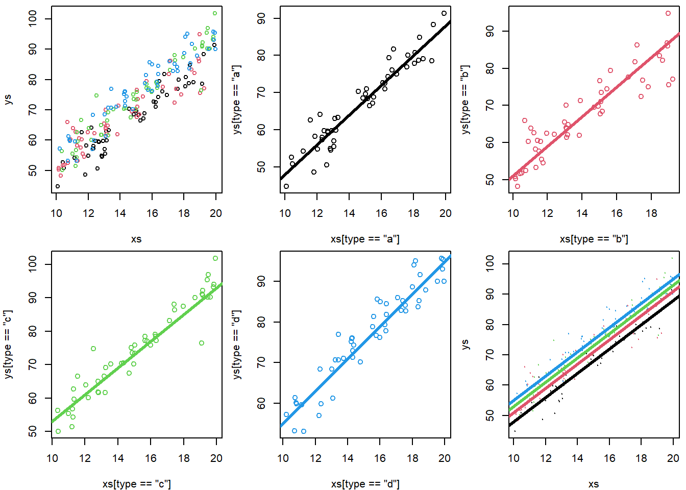

Chapter 10 Class 9: 21 10 2020 - ANCOVA is (also) just a linear model
We move on to Analysis of Covariance, a.k.a. ANCOVA, which is essentially like an ANOVA to which we add a continuous explanatory covariate. The ANCOVA was traditionally used to compare means of an outcome variable between two or more groups taking into account (or to correct for) variability of other variables, called covariates. In other words, ANCOVA allows to compare the adjusted means of two or more independent groups. It’s just… another linear model with a fancy name! Words adapted from this (looooooooooong!) link https://www.datanovia.com/en/lessons/ancova-in-r/!
This is an extremely common situation in biology/ecology data. Consider, as an example, you are trying to explain how the weight of a fish depends on its length, but you want to see if that relationship changes per year or site.
Also, remember the dataset we considered in class 7. The data was simulated via this website: https://drawdata.xyz/ and was named data4lines.csv. Those had (about) the same slope in 3 groups, and a different slope in a forth group. That could be analysed as an ANCOVA, and we will look at it that way at the end.
Lets simulate some relevant data and fit the models
10.1 Common slope, different intercepts per treatment
We begin with a situation where there are different intercepts per group, but a common slope across all groups. Contrast this with what we saw under the previous class, under chapter 9.
To make it interesting, assume that we are simulating weights for 4 different species, and that weights depend on length (as they almost always do!).
This would be interesting and could be some real data if say one wanted to compare the weights of the fishes of 4 different species, we had captured 50 animals from each species. But we know that the fish lengths across species might be different to begin with, and yet our key interest would be say the weight by species, and in that sense the length was essentially a confounding factor.
#all slopes the same, diferent intercepts - no interactions
set.seed(1234)
n<-200
nbygroup<-50
xs <- runif(n,10,20)
tr <- c("a","b","c","d")
type <- rep(tr,each=nbygroup)
cores <- rep(1:4,each=nbygroup)
a<-3
b<-4
error<-4
ys <- a+b*xs+
ifelse(type=="a",5,ifelse(type=="b",8,ifelse(type=="c",10,12)))+rnorm(n,0,4)We plot the data, all together, per group, and at the end adding the generating line to the plot. It’s not easy to make sense of it!
par(mfrow=c(2,3),mar=c(4,4,0.5,0.5))
#all the data - uma salganhada!
plot(xs,ys,col=cores,cex=0.8)
#plot the data
#par(mfrow=c(2,2),mar=c(4,4,0.5,0.5))
plot(xs[type=="a"],ys[type=="a"],col=cores[type=="a"])
abline(3+5,4,lwd=3,col=1)
plot(xs[type=="b"],ys[type=="b"],col=cores[type=="b"])
abline(3+8,4,lwd=3,col=2)
plot(xs[type=="c"],ys[type=="c"],col=cores[type=="c"])
abline(3+10,4,lwd=3,col=3)
plot(xs[type=="d"],ys[type=="d"],col=cores[type=="d"])
abline(3+12,4,lwd=3,col=4)
#the data with each line added to it
#par(mfrow=c(1,1),mar=c(4,4,0.5,0.5))
plot(xs,ys,col=cores,cex=0.2)
abline(3+5,4,lwd=3,col=1)
abline(3+8,4,lwd=3,col=2)
abline(3+10,4,lwd=3,col=3)
abline(3+12,4,lwd=3,col=4)
While not the best to look at the data, note that to visually confirm the value of the intercepts we can zoom out on the plot.
plot(xs,ys,col=cores,xlim=c(0,20),ylim=c(0,150))
abline(3+5,4,lwd=3,col=1)
abline(3+8,4,lwd=3,col=2)
abline(3+10,4,lwd=3,col=3)
abline(3+12,4,lwd=3,col=4)
abline(h=c(3+5,3+8,3+10,3+12),v=0,col=c(1,2,3,4,1),lty=2)
Now we run the corresponding linear model
##
## Call:
## lm(formula = ys ~ xs + type)
##
## Residuals:
## Min 1Q Median 3Q Max
## -13.4694 -2.3640 0.2813 2.1063 11.6596
##
## Coefficients:
## Estimate Std. Error t value Pr(>|t|)
## (Intercept) 9.24244 1.57462 5.870 1.85e-08 ***
## xs 3.92089 0.09997 39.220 < 2e-16 ***
## typeb 3.11952 0.80410 3.880 0.000143 ***
## typec 5.80393 0.80324 7.226 1.10e-11 ***
## typed 7.36736 0.80434 9.159 < 2e-16 ***
## ---
## Signif. codes: 0 '***' 0.001 '**' 0.01 '*' 0.05 '.' 0.1 ' ' 1
##
## Residual standard error: 4.008 on 195 degrees of freedom
## Multiple R-squared: 0.9011, Adjusted R-squared: 0.8991
## F-statistic: 444.3 on 4 and 195 DF, p-value: < 2.2e-16We can check the model intercept coefficients
## [1] 9.242444## [1] 12.36196## [1] 15.04638## [1] 16.60981and the common slope
## [1] 3.920888Check how these values are similar (they are estimates) to those we simulated above, slope was 4, and the intercepts were respectively 3+5,3+8,3+10 and 3+12.
We can plot the estimated regression lines
par(mfrow=c(1,1),mar=c(4,4,2.5,0.5))
plot(xs,ys,col=cores,main="Estimated regression lines")
abline(lm.ancova1$coefficients[1],lm.ancova1$coefficients[2],col=1,lwd=2)
abline(lm.ancova1$coefficients[1]+lm.ancova1$coefficients[3],lm.ancova1$coefficients[2],col=2,lwd=2)
abline(lm.ancova1$coefficients[1]+lm.ancova1$coefficients[4],lm.ancova1$coefficients[2],col=3,lwd=2)
abline(lm.ancova1$coefficients[1]+lm.ancova1$coefficients[5],lm.ancova1$coefficients[2],col=4,lwd=2)
legend("topleft",legend = tr,lwd=2,col=1:4,inset=0.05)
But because we are in a simulation setting, we can contrast the estimated values agaist the reality (the real model).
#In a simulated scenario, we can see we are close to the real values
plot(xs,ys,col=cores)
#plot the lines
abline(a+5,b,lwd=2,col=1)
abline(a+8,b,lwd=2,col=2)
abline(a+10,b,lwd=2,col=3)
abline(a+12,b,lwd=2,col=4)
#gupo a
abline(lm.ancova1$coefficients[1],lm.ancova1$coefficients[2],lwd=1,col=1,lty=2)
#grupo b
# intercept+slope*xs+intercept especifico do grupo b
# (intercept+intercept especifico do grupo b)+ slope
abline(lm.ancova1$coefficients[1]+lm.ancova1$coefficients[3],lm.ancova1$coefficients[2],lwd=1,col=2,lty=2)
#grupo c
abline(lm.ancova1$coefficients[1]+lm.ancova1$coefficients[4],lm.ancova1$coefficients[2],lwd=1,col=3,lty=2)
#grupo d
abline(lm.ancova1$coefficients[1]+lm.ancova1$coefficients[5],lm.ancova1$coefficients[2],lwd=1,col=4,lty=2)
As we can see, they are quite close. The error is small compared with the effrect sizes, and the sample size is large enough we can estimate the parameters reasonably well.
But how exactly do we get the predicted intercepts? To understand where they come from we need to see what R does (or, for that matter, what any other software would need to do!) in the background to fit a model with a factor covariate. Remember what the data is
## ys xs type
## 1 54.20623 11.13703 a
## 2 70.99310 16.22299 a
## 3 72.63496 16.09275 a
## 4 70.92527 16.23379 a
## 5 79.13262 18.60915 a
## 6 74.28038 16.40311 a
## 7 44.79477 10.09496 a
## 8 57.97476 12.32551 a
## 9 76.06322 16.66084 a
## 10 68.36163 15.14251 abefore fitting a factor covariate, we need to replace it by dummy variables (k-1 dummy variables, where k is the number of levels of the factor). Below we look at a set of data lines that allow us to see observations from the diferent types considered
#explaining it
data.frame(ys=ys,xs=xs,type=type,typeb=ifelse(type=="b",1,0),typec=ifelse(type=="c",1,0),typed=ifelse(type=="d",1,0))[c(1,49,50,51,99,100,101,149,150,151,200),]## ys xs type typeb typec typed
## 1 54.20623 11.13703 a 0 0 0
## 49 59.78224 12.43929 a 0 0 0
## 50 80.00860 17.65460 a 0 0 0
## 51 52.44224 10.73780 b 1 0 0
## 99 64.03652 13.09647 b 1 0 0
## 100 72.37184 17.42120 b 1 0 0
## 101 56.35918 10.35457 c 0 1 0
## 149 93.28892 19.80787 c 0 1 0
## 150 77.14469 15.76813 c 0 1 0
## 151 74.30940 14.39042 d 0 0 1
## 200 81.84481 16.39205 d 0 0 1So R first builds what is known as the design matrix. Notation wise Y= parameters \(\times\) design matrix, or Y = \(\beta\)X (see e.g. https://en.wikipedia.org/wiki/Design_matrix)
#the design matrix
head(data.frame(xs=xs,typeb=ifelse(type=="b",1,0),typec=ifelse(type=="c",1,0),typed=ifelse(type=="d",1,0)))## xs typeb typec typed
## 1 11.13703 0 0 0
## 2 16.22299 0 0 0
## 3 16.09275 0 0 0
## 4 16.23379 0 0 0
## 5 18.60915 0 0 0
## 6 16.40311 0 0 0and that is what it uses for the fitting. Therefore, if we want to know the intercept of say type c, we need to sum the common intercept with the parameter associates with the dummy variable typeb.
This would be an ANCOVA, and here we would conclude that the mean of the response was different for the different levels of \(z\) , once accounting for the fact that the \(xs\) varied. this is evident since all the coefficients estimates and associated precisions in the summary of the model above would lead to rejecting the null hypothesis that their value was 0, as can be seen by the corresponding very small p-values. Not a surprise, since we simulated them as different and the errors were small.
Taks: Increase the simulated error or lower the coefficients until you get type II errors. Change also sample sizes and effect sizes to see the impacts on the model performance!